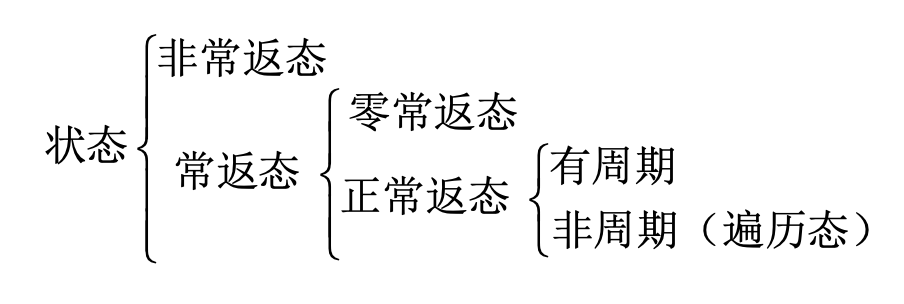

[随机过程]2·Markov过程
\[ \newcommand{\coloneqq}{\mathrel{\mathrel{\vcenter{:}}=}} \]
本章先讨论一类参数离散、状态空间离散的特殊随机过程，即参数为 \(T=\{0,1,2,\ldots\}=N_0\)，状态空间为可列 \(S=\{1,2,\ldots\}\) 或有限 \(S=\{1,2,\ldots,n\}\) 的 Markov 链。之后讨论另一类参数连续、状态空间离散的随机过程，即纯不连续 Markov 过程。
Markov 链的定义
定义：设随机序列 \(\{X(n);n\geq 0\}\) 的状态空间为 \(S\)（离散），如果对 \(\forall n\in N_0\) 及 \(i_0,i_1,\ldots,i_n,i_{n+1}\in S\)，且 \(P(X(0)=i_0,X(1)=i_1,\ldots,X(n)=i_n)>0\)，有： \[ P(X(n+1)=i_{n+1}\vert X(0)=i_0,X(1)=i_1,\ldots,X(n)=i_n)=P(X(n+1)=i_{n+1}\vert X(n)=i_n) \] 则称 \(\{X(n);n\geq0\}\) 为 Markov 链。
注：\(\{X(n);n\geq0\}\) 也可记作 \(\{X_n;n\geq0\}\).
注：上述定义刻画了 Markov 链的无后效性（Markov 性），即随机过程将来所处各个状态可能性只与现在所处状态有关，而与过去无关）。
一步转移概率： \[ p_{ij}(n)\coloneqq P(X(n+1)=j\vert X(n)=i) \] 对于齐次 Markov 链，一步转移概率与时刻 \(n\) 无关： \[ p_{ij}\equiv p_{ij}(n)\coloneqq P(X(n+1)=j\vert X(n)=i) \] 齐次 Markov 链的转移矩阵： \[ P\coloneqq\left[p_{ij}\right] \] 初始分布： \[ \{\pi_i(0),i\in S\},\quad\text{where}\quad \pi_i(0)=P(X_0=i) \] 只要得到了马氏链的一步转移概率及初始分布，就可以求得马氏链的任意前 \(n+1\) 维的联合分布。特别地，若马氏链是齐次的，则由转移矩阵及初始分布，就可以得到齐次马氏链的任意前 \(n+1\) 维的联合分布。
注：一步转移概率满足 \[ \begin{align} &p_{ij}(n)\geq 0,\quad i,j\in S\\ &\sum_{j\in S}p_{ij}(n)=1,\quad i\in S \end{align} \]
C-K 方程
\(m\) 步转移概率： \[ p_{ij}^{(m)}(n)\coloneqq P(X(n+m)=j\vert X(n)=i) \] 规定： \[ p_{ij}^{(0)}=\delta_{ij}=\begin{cases}1&i=j\\0&i\neq j\end{cases} \] 齐次情形下与 \(n\) 无关： \[ p_{ij}^{(m)}\equiv p_{ij}^{(m)}(n)\coloneqq P(X(n+m)=j\vert X(n)=i) \] 有 m 步转移矩阵： \[ P^{(m)}\coloneqq\left[p_{ij}^{(m)}\right] \] C-K 方程： \[ p_{ij}^{(m+r)}(n)=\sum_{k\in S}p_{ik}^{(m)}(n)p_{kj}^{(r)}(n+m) \] 对于齐次 Markov 链： \[ p_{ij}^{(m+r)}=\sum_{k\in S}p_{ik}^{(m)}p_{kj}^{(r)} \] 写作矩阵形式： \[ P^{(m+r)}=P^{(m)}P^{(r)} \] 由此可以推出： \[ P^{(m)}=P^m \]
由此可知，对于齐次 Markov 链，如果知道了它的初始分布和一步转移矩阵，就可以求出该齐次马氏链的所有有限维概率分布。因此，利用一步转移矩阵及初始分布就可以完全确定齐次马氏链的统计性质。
Markov 链状态分类
到达与相通
到达：设 \(i,j\in S\)，若存在 \(n\geq 1\)，使得 \(p_{ij}^{(n)}>0\)，则称从状态 \(i\) 可到达状态 \(j\)，记作 \(i\to j\).
相通：\(i\to j,j\to i\iff i\leftrightarrow j\).
定理：到达和相通都具有传递性（利用 C-K 方程可证）。
首达时间与首达概率
首达时间：设 \(i,j\in S\)，定义状态 \(i\) 到状态 \(j\) 的首达时间为： \[ T_{ij}(\omega)\coloneqq \min\{n:X_0=i,\,X_n(\omega)=j,\,n\geq1\} \] 注意：首达时间 \(T_{ij}:\Omega\to\{1,2,\ldots,\infty\}\subset\mathbb R\) 是一个随机变量。
首达概率：设 \(i,j\in S\)，定义系统在 0 时从状态 \(i\) 出发经 \(n\) 步首次到达状态 \(j\) 的概率为： \[ f_{ij}^{(n)}\coloneqq P(T_{ij}=n\vert X_0=i) \] 由定义，有： \[ \begin{align} &f_{ij}^{(n)}=P(X_n=j;X_m\neq j,m=1,\ldots,n-1\vert X_0=i)\\ &f_{ij}^{(\infty)}=P(X_m\neq j,\forall m\geq 1\vert X_0=i) \end{align} \] 迟早到达的概率：设 \(i,j\in S\)，定义系统在 0 时从状态 \(i\) 出发经过有限步转移后迟早到达状态 \(j\) 的概率为： \[ f_{ij}\coloneqq\sum_{n=1}^\infty f_{ij}^{(n)} \] 性质：
- \(0\leq f_{ij}^{(n)}\leq p_{ij}^{(n)}\leq f_{ij}\leq 1\)；
- \(p_{ij}^{(n)}=\sum_{l=1}^n f_{ij}^{(l)}p^{(n-l)}_{jj}\)（先用 \(l\) 步首达 \(j\)，在用 \(n-l\) 从 \(j\) 到达 \(j\) 即可）；
- \(f_{ij}>0\iff i\to j\)；
- \(f_{ij}>0\land f_{ji}>0\iff i\leftrightarrow j\).
常返态与非常返态
常返态与非常返态：设 \(i\in S\)，若 \(f_{ii}=1\)，则称 \(i\) 为常返态；若 \(f_{ii}<1\)，则称 \(i\) 为非常返态。
平均转移步数：设 \(i,j\in S\)，定义从状态 \(i\) 出发首次到达状态 \(j\) 的平均转移步数为： \[ \mu_{ij}\coloneqq\mathbb E[T_{ij}\vert X_0=i]=\sum_{n=0}^\infty nf_{ij}^{(n)} \] 正常返与零常返：对于常返态 \(i\in S\)，若 \(\mu_i<\infty\)，则称状态 \(i\) 为正常返的；否则，若 \(\mu_i=\infty\)，则称状态 \(i\) 为零常返的。
常返态与非常返态的判别：
- 状态 \(i\) 是常返的（\(f_{ii}=1\)） \(\iff\displaystyle\sum_{n=0}^\infty p_{ii}^{(n)}=\infty\)；
- 状态 \(i\) 是非常返的（\(f_{ii}<1\)） \(\iff\displaystyle\sum_{n=0}^\infty p_{ii}^{(n)}=\frac{1}{1-f_{ii}}<\infty\)；
- 若 \(j\) 是非常返的，则对于任意 \(i\in S\)，有 \(\displaystyle\sum_{n=0}^\infty p_{ij}^{(n)}<\infty,\,\lim_{n\to\infty}p_{ij}^{(n)}=0\)；
- 设 \(i\leftrightarrow j\)，则 \(i\) 和 \(j\) 都是正常返的，或者都是非常返的，或者都是零常返的（相通状态有相同性质）。
闭集与周期
闭集：设 \(C\) 是状态空间 \(S\) 的一个子集，如果从 \(C\) 内任何一个状态 \(i\) 不能到达 \(C\) 外的任何状态，则称 \(C\) 是一个闭集。
吸收态：如果单个状态 \(i\) 构成的集 \(\{i\}\) 是闭集，则称状态 \(i\) 是吸收态。
不可约闭集：如果闭集 \(C\) 中不再含有任何非空闭的真子集，则称 \(C\) 是不可约的。
性质：
- 所有常返态构成一个闭集（但可能可约）
- 在不可约 Markov 链中，所有状态具有相同的状态类型。
周期：对 \(i\in S\)，若正整数集 \(\{n;n\geq 1,p_{ii}^{(n)}>0\}\) 非空，则定义其最大公约数为状态 \(i\) 的周期，记为 \(d_i\)；当 \(d_i=1\) 时，称该状态无周期。
遍历态：称非周期正常返状态为遍历态。
注意：一个不可约的、非周期的、有限状态 Markov 链一定是遍历的。
定理：若 \(i\leftrightarrow j\)，则 \(i\) 与 \(j\) 有相同的周期。

周期状态的判别：
- 按互通性将状态分类后，在同一类集合中选一个状态判别其周期性即可；
- 如有正整数 \(n\)，使得 \(p_{ii}^{(n)}>0,\,p_{ii}^{(n+1)}>0\)，则状态 \(i\) 无周期；
- 如有正整数 \(m\)，使得 \(m\) 步转移矩阵 \(P^m\) 中某状态 \(j\) 的那一列全不为零，则状态 \(j\) 无周期。
分解定理
分解定理：齐次 Markov 链的状态空间 \(S\) 可唯一地分解为有限多个或可列多个互不相交 的状态子集 \(D,C_1,C_2,\ldots\) 之并，即： \[ S=D\cup C_1\cup C_2\cup\cdots \] 其中 \(D\) 是非常返态集，\(C_k\) 是常返态组成的不可约集。每个 \(C_k\) 内部的状态互通，因此具有相同的状态类型。按照该顺序将状态重新排列，则转移矩阵具有如下的标准形式： \[ P=\begin{bmatrix} P_{\small D}&P_{\small D_1}&P_{\small D_2}&\cdots\\ &P_1&&\\ &&P_2&\\ &&&\ddots \end{bmatrix} \] 周期链分解定理：一个周期为 \(d\) 的不可约 Markov 链，其状态空间 \(S\) 可以分解为 \(d\) 个互不相交的集 \(J_1,J_2,\ldots,J_d\) 之并，即： \[ S=\bigcup_{r=1}^d J_r,\quad J_k\cap J_l=\varnothing,\,k\neq l \] 且从 \(J_r\) 出发一定到达 \(J_{r+1}\)： \[ \sum_{j\in J_{r+1}}p_{ij}=1,\,i\in J_r,\,r=1,2,\ldots,d \] 其中约定 \(J_{d+1}=J_1\).
有限状态 Markov 链的性质
所有非常返状态组成的集合不可能是闭集；
没有零常返状态；
必有正常返状态；
不可约有限 Markov 链只有正常返态；
状态空间可以分解为： \[ S=D\cup C_1\cup C_2\cup \cdots\cup C_k \]
Markov 链的极限性态与平稳分布
\(P^n\) 的极限
非常返态情形：根据前文讨论知，若 \(j\in S\) 为非常返状态，则对任意 \(i\in S\)，有 \(\displaystyle\lim_{n\to\infty}p_{ij}^{(n)}=0\).
零常返态情形：状态 \(i\in S\) 为零常返状态当且仅当 \(\displaystyle\lim_{n\to\infty}p_{ii}^{(n)}=0\)；若 \(j\) 为零常返状态，则对于任意 \(i\in S\)，有 \(\displaystyle\lim_{n\to\infty}p_{ij}^{(n)}=0\).
周期正常返情形：周期链整体没有极限，但有存在极限的子列。设 \(i\in S\) 是周期为 \(d\) 的常返状态，则有 \(\displaystyle\lim\limits_{n\to\infty}p_{ii}^{(nd)}=\frac{d}{\mu_i}\).
非周期正常返（遍历态）情形：状态 \(i\in S\) 为遍历状态当且仅当 \(\displaystyle\lim_{n\to\infty}p_{ii}^{(n)}=\frac{1}{\mu_i}>0\).
定理：有限状态不可约遍历链的 \(P^n\) 有极限，即 \(\displaystyle\lim_{n\to\infty}P^n=\pi\)，其中 \(\pi\) 是一个随机矩阵，且各行相同。
推论 1：\(P^n\) 的极限矩阵 \(\pi\) 是唯一的，且满足 \(\pi P=\pi\)，\(\sum\limits_{i\in S}\pi_i=1\).
推论 2：\(\lim\limits_{n\to\infty}P(X_n=j)=\lim\limits_{n\to\infty} p_{ij}^{(n)}=\pi_j\)，与初始分布无关。
定理：若 \(j\) 是遍历态，则对于任意 \(i\in S\)，有： \[ \lim_{n\to\infty}p_{ij}^{(n)}=\frac{f_{ij}}{\mu_j} \] 定理：对于不可约遍历链，对任意 \(i,j\in S\) 都有： \[ \lim_{n\to\infty}p_{ij}^{(n)}=\frac{1}{\mu_{j}} \]
此定理说明，对于不可约遍历链，计算平均转移步数不需要按照定义计算 \(\mu_{j}=\sum\limits_{n=0}^{\infty}nf_{jj}^{(n)}\)，只需要计算极限分布的倒数即可。
平稳分布
定义：一个定义在状态空间上的概率分布 \(\pi=\{\pi_1,\pi_2,\ldots,\pi_i,\ldots\}\) 称为 Markov 链的平稳分布，如有： \[ \pi=\pi P \] 也称为 Markov 链的不变概率测度。
定理：设 \(\{X_n,n\geq 0\}\) 是一 Markov 链，则其为严平稳过程的充要条件是 \(\pi(0)\) 是平稳分布，即有 \(\pi(0)=\pi(0)P\).
定理：不可约的遍历链恒有唯一的平稳分布 \(\displaystyle\left\{\pi_i=\frac{1}{\mu_i},\,i\in S\right\}\)，且 \(\pi_j=\lim\limits_{n\to\infty}p_{ij}^{(n)}\).
极限分布
定义：若 \(\lim\limits_{n\to\infty}\pi_j(n)=\lim\limits_{n\to\infty}P(X_n=j)=\pi_j^\ast,\,j\in S\) 存在，则称 \(\pi^\ast=\{\pi_1^\ast,\ldots,\pi_j^\ast,\ldots\}\) 为 Markov 链的极限分布。
定理：非周期不可约链是正常返的充要条件是存在平稳分布，且此时平稳分布就是极限分布。
根据该定理，只需要解方程 \(\pi P=\pi\)（结合 \(\sum_i\pi_i=1\)）。如果有解，那么非周期不可约链是正常返的，且解出的就是平稳分布/极限分布。
方程 \(\pi P=\pi\) 也称作“平衡方程”，可以直接观察状态转移图，对每个节点列【出去=进来】，得到的方程组与 \(\pi P=\pi\) 本质是一样的。
非常返态分析
由状态空间的分解可知，状态空间 \(S\) 可唯一地分解为: \[ S=D\cup C_1\cup C_2\cup\cdots=D\cup C \] 其中 \(D\) 是非常返态集，每个 \(C_k\) 均是有常返状态组成的不可约集，其中的状态互通。
从状态 \(i\) 出发进入状态子集 \(C_k\) 的概率 \(P(C_k\vert i)\)
若 \(i\in C_k\)，则 \(P(C_k\vert i)=1\)；
若 \(i\in C_m,\,m\neq k\)，则 \(P(C_k\vert i)=0\)；
若 \(i\in D\)，则： \[ P(C_k\vert i)=\sum_{j\in S}p_{ij}P(C_k\vert j) \] 将和式拆开，有： \[ P(C_k\vert i)-\sum_{j\in D}p_{ij}P(C_k\vert j)=\sum_{j\in C_k}p_{ij} \] 解该方程组即可得到概率 \(P(C_k\vert i)\).
非常返态进入常返态所需的平均时间
吸收时间：设 \(T\) 为从状态 \(i\in S\) 出发进入常返态类所需的时间，称此时间为吸收时间。\(T\) 是一个取值于 \(\{0,1,\ldots\}\) 的随机变量。
迟早进入常返态类的概率：设 \(P(T=n\vert i),\,n=0,1,2,\ldots\) 为经过 \(n\) 步转移后由状态 \(i\) 进入常返态类的概率，则： \[ \sum\limits_{n=0}^{\infty}P(T=n\vert i)=P(T<\infty\vert i) \] 表示从状态 \(i\) 出发迟早进入常返态类的概率。
亏值：称 \(1-\sum\limits_{n=0}^{\infty}P(T=n\vert i)=1-P(T<\infty\vert i)\) 为过程的亏值，表示过程永远停留在非常返态的概率。
非常返态进入常返态所需的平均时间：若过程的亏值为 0，则解下列方程组即可计算非常返态进入常返态所需的平均时间： \[ \mathbb E[T\vert i]-\sum_{j\in D}\mathbb E[T\vert j]p_{ij}=1,\quad i\in D \]
参数连续状态离散的 Markov 过程
暂略。